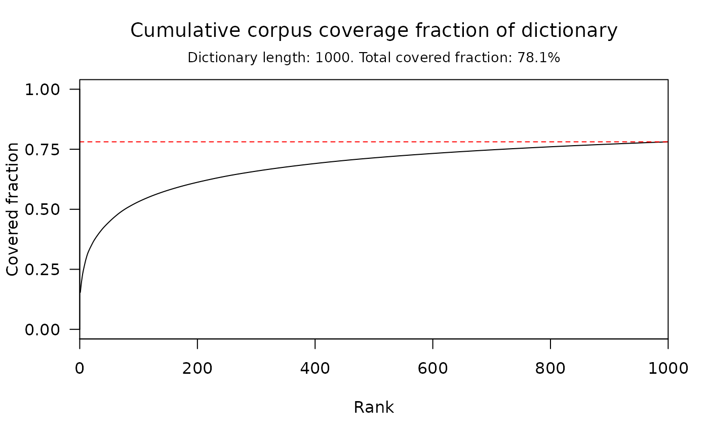

Compute total and cumulative corpus coverage fraction of a dictionary.
word_coverage(object, corpus, ...) # S3 method for sbo_dictionary word_coverage(object, corpus, ...) # S3 method for character word_coverage(object, corpus, .preprocess = identity, EOS = "", ...) # S3 method for sbo_kgram_freqs word_coverage(object, corpus, ...) # S3 method for sbo_predictions word_coverage(object, corpus, ...)
| object | either a character vector, or an object inheriting from one of
the classes |
|---|---|
| corpus | a character vector. |
| ... | further arguments passed to or from other methods. |
| .preprocess | preprocessing function for training corpus. See
|
| EOS | a length one character vector. String containing End-Of-Sentence
characters, see |
a word_coverage object.
This function computes the corpus coverage fraction of a dictionary, that is the fraction of words appearing in corpus which are contained in the original dictionary.
This function is a generic, accepting as object argument any object
storing a dictionary, along with a preprocessing function and a list
of End-Of-Sentence characters. This includes all sbo main classes:
sbo_dictionary, sbo_kgram_freqs, sbo_predtable and
sbo_predictor. When object is a character vector, the preprocessing
function and the End-Of-Sentence characters must be specified explicitly.
The coverage fraction is computed cumulatively, and the dependence of
coverage with respect to maximal rank can be explored through plot()
(see examples below)
Valerio Gherardi
#> A 'word_coverage' object. #> #> See summary() for more details. #>#> Word coverage fraction #> #> Dictionary length: 1000 #> Coverage fraction (w/ EOS): 78.1 % #> Coverage fraction (w/o EOS): 74.9 %# }